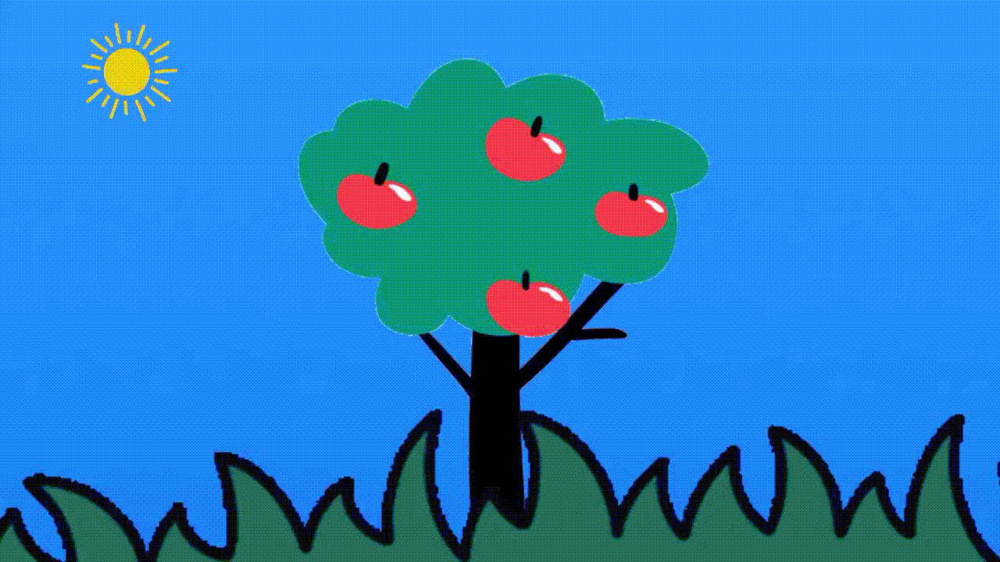
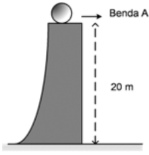
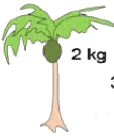

Energi memiliki dua bentuk, yaitu akibat gerakan dan posisi. Energi yang dimiliki oleh benda bergerak disebut energi kinetik, sedangkan energi yang dimiliki benda akibat posisinya disebut energi potensial.
a. Energi Potensial
Setiap benda menyimpan energi potensial. Sebagai contoh buah yang berada di atas pohon mempunyai potensi untuk jatuh karena buah mendapat pengaruh gaya gravitasi bumi. Ketinggian buah menyebabkan benda memiliki energi potensial. Kayu-kayu di hutan juga menyimpan energi potensial dalam bentuk senyawa kimia. Oleh karena itu, energi potensial didefinisikan sebagai energi yang dimiliki oleh suatu materi karena lokasi atau strukturnya.
1. Energi Potensial Gravitasi

Gambar 1 Contoh Energi Potensial
Buah apel yang ada diatas pohon memiliki energi potensial gravitasi akibat tarikan gaya gravitasi bumi. Energi inilah yang menyebabkan buku dapat jatuh ke lantai. Energi potensial gravitasi adalah energi yang dimiliki suatu benda akibat kedudukan atau posisinya di atas permukaan bumi. Energi ini dipengaruhi oleh massa benda dan ketinggian benda. Hubungan massa dan ketinggian benda terhadap energi potensial dinyatakan dengan persamaan berikut.
$E_P = m.g.h$
Keterangan:
Ep = energi potensial (joule)
m = massa benda (kg)
g = percepatan gravitasi bumi (m/s2)
h = tinggi benda (m)
Ayo Menonton
Untuk lebih memahami mengenai energi potensial. Perhatikan video demonstrasi berikut ini dengan seksama.
Kesimpulan
KESIMPULAN AKAN MUNCUL SETELAH SELESAI MENONTON VIDEO
Besarnya energi potensial berbanding lurus dengan massa, percepatan gravitasi dan ketinggian letak benda. Semakin tinggi dan semakin besar massa benda, maka energi potensialnya semakin besar. Berlaku sebaliknya, jika massa benda semakin kecil dan ketinggian benda semakin rendah, maka energi potensialnya semakin kecil.
Contoh (Klik)
Perhatikan gambar di bawah ini!

Sebuah bola bermassa 3 kg berada pada ketinggian 20 meter seperti yang ditunjukan pada gambar. Besar energi potensial pada bola tersebut adalah …. (g = 10 m/s2)
Diketahui: m = 3 kg
g = 10 m/s2 h = 20 m
Ditanya: Ep=...?
Jawab: Ep= m.g.h Ep= 3.10.20 Ep= 600 J Sehingga, energi potensial pada kelapa itu sebesar 600 Joule.
Pada buah durian yang masih menggantung di pohon bermassa 2,5 kg. Apabila pohon durian tersebut mempunyai ketinggian 9 meter. Hitunglah energi potensial pada buah durian tersebut apabila diketahui gaya gravitasinya g = 10 m/s2!
Diketahui: m = 2,5 kg
g = 10 m/2 h = 9 m
Ditanya: Ep=...?
Jawab: Ep= m.g.h Ep= 2,5.10.9 Ep= 225 J Sehingga, energi potensial pada durian itu sebesar 225 Joule.
Sebuah bola basket mempunyai massa 3 kg yang diletakan di atas lemari. Apabila bola basket tersebut diketahui mempunyai energi sebesar 105 joule, maka hitunglah ketinggian dari lemari tersebut. Serta diketahui jika gravitasinya sebesar g = 10 m/s2.
Diketahui: m = 3 kg
g = 10 m/s2 Ep = 105 J
Ditanya: h=...?
Jawab: Ep= m.g.h 105= 3.10.h 105= 30.h h= 3,5 m Sehingga, tinggi pada bola basket itu sebesar 3,5 m.
Mari Mencoba
Sebuah bola dengan massa 2 kg jatuh ke permukaan tanah dari atas meja dan menghasilkan energi sebesar 80 Joule, berapa tinggi bola sebelum jatuh jika percepatan gravitasi bumi 10 m/s2?
JAWABAN
Jawaban Salah
Sayang sekali. Silahkan pelajari kembali materi di atas dengan penuh semangat.
Jawaban benar
Diketahui: m = 2 kg
g = 10 m/s2 Ep = 80 J
Ditanya: h=...?
Jawab: Ep= m.g.h 80= 2.10.h 80= 20.h h= 4 m Sehingga, tinggi pada bola itu sebesar 4 m.
Sebuah benda berada pada ketinggian 5 m dari atas tanah. Jika energi potensial benda tersebut adalah 100 joule dan percepatan gravitasi bumi adalah 10 m/s2, tentukan berapakah massa benda tersebut?
JAWABAN
Jawaban Salah
Sayang sekali. Silahkan pelajari kembali materi di atas dengan penuh semangat.
Jawaban benar
Diketahui: h = 5 m
g = 10 m/s2 Ep = 100 J
Ditanya: h=...?
Jawab: Ep= m.g.h 100= m.10.5 100= m.50 m= 2 kg Sehingga, massa benda tersebut sebesar 2 m.
Perhatikan gambar di bawah ini!

Buah kelapa bermassa 2 kg tergatung pada tangkainya yang berada pada ketinggian 8 m dari atas tanah. Jika percepatan gravitasi bumi adalah 10 m/s2, Berapakah besar energi potensial yang dimiliki oleh buah pepaya tadi?
JAWABAN
Jawaban Salah
Sayang sekali. Silahkan pelajari kembali materi di atas dengan penuh semangat.
Jawaban benar
Diketahui: m = 2 kg
g = 10 m/s2 h = 8 m
Ditanya: h=...?
Jawab: Ep= m.g.h Ep= 2.10.8 Ep= 160 J Sehingga, Energi potensial pada buah kelapa adalah 160 Joule.